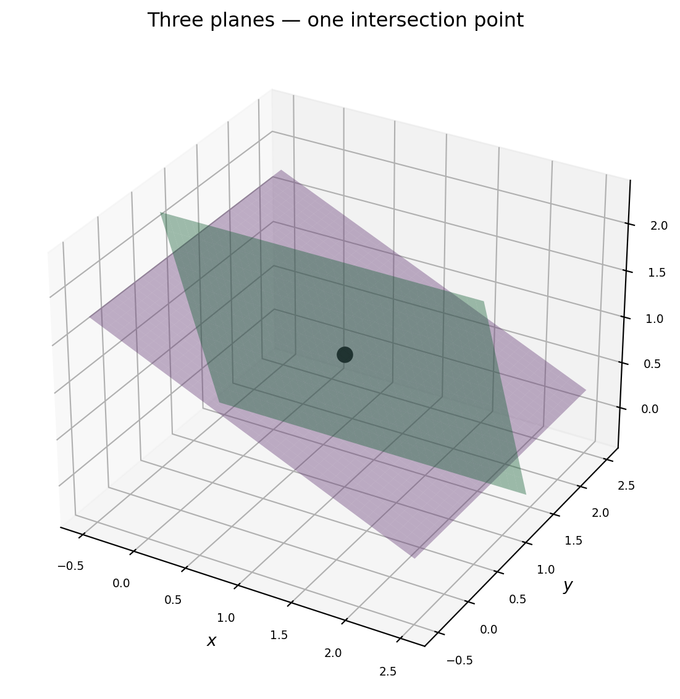

describes a line in \(\mathbb{R}^2\). Every point on that line satisfies the equation. A system of two such equations asks: where do two lines meet?
That geometric picture generalises exactly. In \(\mathbb{R}^3\) one equation defines a plane. In \(\mathbb{R}^n\) it defines a hyperplane — a flat \((n-1)\)-dimensional slice through \(n\)-dimensional space. Solving a system of \(m\) equations in \(n\) unknowns means finding the intersection of \(m\) hyperplanes.
2.1.1 One Equation, One Hyperplane
The equation \(\mathbf{a}^T \mathbf{x} = b\) (row vector \(\mathbf{a}\), column vector \(\mathbf{x}\)) defines a hyperplane perpendicular to \(\mathbf{a}\) at signed distance \(b / \|\mathbf{a}\|\) from the origin.
The arrows show the normal vectors\(\mathbf{a}_1 = [2, 1]^T\) and \(\mathbf{a}_2 = [-1, 2]^T\) — each perpendicular to its line. The solution is the unique point that lies on both hyperplanes simultaneously.
2.1.2 Extending to 3D
With three unknowns, each equation cuts out a plane in \(\mathbb{R}^3\). Two planes generically intersect in a line. Add a third plane — if it crosses that line, you get a point.
import numpy as npimport matplotlib.pyplot as pltcolors = ['#4a90d9', '#2ecc71', '#9b59b6']# System with unique solution at (1, 1, 1)A = np.array([[2., 1., 0.], [0., 3., 1.], [1., 0., 2.]])b = A @ np.array([1., 1., 1.])fig = plt.figure(figsize=(7, 6))ax = fig.add_subplot(111, projection='3d')r = np.linspace(-0.5, 2.5, 40)X, Y = np.meshgrid(r, r)for row, rhs, col inzip(A, b, colors):ifabs(row[2]) >1e-9: Z = (rhs - row[0]*X - row[1]*Y) / row[2] mask = (Z >-0.5) & (Z <2.5) Zp = np.where(mask, Z, np.nan) ax.plot_surface(X, Y, Zp, alpha=0.4, color=col)sol = np.linalg.solve(A, b)ax.scatter(*sol, color='black', s=80, zorder=10, depthshade=False, label='solution')ax.set_xlabel('$x$', labelpad=3)ax.set_ylabel('$y$', labelpad=3)ax.set_zlabel('$z$', labelpad=3)ax.set_title('Three planes — one intersection point', pad=8)ax.tick_params(labelsize=7)plt.tight_layout()plt.show()

2.1.3 The Three Cases — Unique, No Solution, Infinitely Many
Two lines in \(\mathbb{R}^2\) can intersect at a point, be parallel (never meet), or coincide (overlap entirely). The three panels below show each case with concrete slope/intercept values.
Setting both slopes equal makes the lines parallel — no solution. Setting both slopes and intercepts equal makes them coincide — infinitely many solutions. These two degenerate cases are not numerical flukes; they are the subject of §2.2.
2.1.4 The Normal-Vector Viewpoint
Row \(i\) of \(A\) is the normal vector to the \(i\)-th hyperplane. The right-hand side \(b_i\) is the signed offset along that normal:
The solution \(\mathbf{x}^*\) lies on every hyperplane simultaneously.
When you debug a failed linear solve, the first geometric question is: are any two of my hyperplanes nearly parallel? Nearly parallel normals mean nearly linearly dependent rows — rank deficiency. That is Chapter 3.
2.2 The Three Solution Cases
A system \(A\mathbf{x} = \mathbf{b}\) with \(A \in \mathbb{R}^{m \times n}\) has exactly one of three outcomes:
Case
Geometry
Physical example
No solution
Hyperplanes miss each other
Contradictory sensor readings
Unique solution
Hyperplanes meet at one point
Well-determined position fix
Infinitely many
Hyperplanes share a line or subspace
Underdetermined kinematics
There is no fourth option. Understanding which case you are in — before you call a solver — is what separates robust code from brittle code.
2.2.1 Case 1 — No Solution (Inconsistent System)
The system is inconsistent when \(\mathbf{b}\) is not in the column space of \(A\): no linear combination of \(A\)’s columns reaches \(\mathbf{b}\).
Physical example — GPS with a faulty satellite. Three range measurements from satellites should meet at one point. If one satellite has a clock error, the three spheres no longer intersect — the system is inconsistent.
import numpy as np# Inconsistent 3×2 system: two lines that don't intersect in R^2A = np.array([[1., 2.], [2., 4.], # parallel to row 1 (same normal direction) [1., -1.]])b = np.array([3., 7., 1.]) # 7 ≠ 2*3=6, so rows 1 & 2 are contradictory# np.linalg.solve requires square A; use lstsq which always returns somethingx, res, rank, sv = np.linalg.lstsq(A, b, rcond=None)print(f"Rank of A: {rank} (out of {min(A.shape)} possible)")print(f"Residual: {np.linalg.norm(A @ x - b):.4f} ← non-zero means no exact solution")print(f"lstsq x: {x.round(4)} ← best-fit, not exact")
Rank of A: 2 (out of 2 possible)
Residual: 0.4472 ← non-zero means no exact solution
lstsq x: [1.8 0.8] ← best-fit, not exact
The non-zero residual is the diagnostic. A zero residual would mean the system was consistent; a large residual points to a measurement contradiction worth investigating before proceeding.
2.2.2 Case 2 — Unique Solution
The system has a unique solution when \(A\) has full column rank and \(m \geq n\) (at least as many equations as unknowns, independent ones).
Physical example — trilateration from three WiFi access points. Three known-position routers each provide a range estimate. Three linear constraints, three unknowns — generically one solution.
The condition number is what distinguishes a numerically unique solution from a practically unreliable one. A condition number of 1000 does not mean no solution exists — it means the solution is sensitive to errors in \(\mathbf{b}\).
2.2.3 Case 3 — Infinitely Many Solutions
When \(A\) has more unknowns than independent equations, the solution is not a point but a flat (an affine subspace). The general solution is:
\[\mathbf{x} = \mathbf{x}_p + \mathbf{x}_h\]
where \(\mathbf{x}_p\) is any particular solution satisfying \(A\mathbf{x}_p =
\mathbf{b}\), and \(\mathbf{x}_h\) is any vector in the null space of \(A\) (satisfying \(A\mathbf{x}_h = \mathbf{0}\)).
Physical example — redundant robot arm. A 7-DoF arm positioning its end-effector in 6-DoF space has one extra degree of freedom. For any target pose, there is a 1-parameter family of joint configurations that reaches it.
import numpy as np# Underdetermined system: 2 equations, 3 unknownsA = np.array([[1., 2., 3.], [0., 1., 2.]])b = np.array([6., 3.])# Minimum-norm particular solution via lstsqx_p, _, rank, _ = np.linalg.lstsq(A, b, rcond=None)print(f"Rank: {rank} (< {A.shape[1]} unknowns → underdetermined)")print(f"x_p (min-norm): {x_p.round(4)}")print(f"Residual: {np.linalg.norm(A @ x_p - b):.2e} ← exact solution")# Null space: any vector orthogonal to both rows of A# The null space of a 2×3 rank-2 matrix is 1-dimensional_, _, Vt = np.linalg.svd(A)null_vec = Vt[-1] # last right singular vectorprint(f"\nNull vector: {null_vec.round(4)}")print(f"A @ null_vec: {(A @ null_vec).round(10)} ← should be [0, 0]")# Any scalar multiple of null_vec can be added to x_palpha =2.5x_other = x_p + alpha * null_vecprint(f"\nalpha={alpha}: x = {x_other.round(4)}, A @ x = {(A @ x_other).round(6)}")
Rank: 2 (< 3 unknowns → underdetermined)
x_p (min-norm): [1. 1. 1.]
Residual: 2.70e-15 ← exact solution
Null vector: [ 0.4082 -0.8165 0.4082]
A @ null_vec: [-0. -0.] ← should be [0, 0]
alpha=2.5: x = [ 2.0206 -1.0412 2.0206], A @ x = [6. 3.]
The null space is the set of all “free motions” — directions you can move without changing the output \(A\mathbf{x}\). Chapter 3 derives the null space systematically from row reduction.
2.2.4 Detecting the Case Before Solving
In practice you should diagnose the system before committing to a solver:
import numpy as npdef diagnose_system(A, b):"""Print which of the three cases applies.""" m, n = A.shape rank_A = np.linalg.matrix_rank(A) Ab = np.column_stack([A, b]) rank_Ab = np.linalg.matrix_rank(Ab)print(f"Shape: {m} equations, {n} unknowns")print(f"rank(A) = {rank_A}, rank([A|b]) = {rank_Ab}")if rank_Ab > rank_A:print("→ INCONSISTENT: no solution")elif rank_A == n:print("→ UNIQUE solution")else:print(f"→ INFINITELY MANY: null space dimension = {n - rank_A}")# Test all three casesprint("=== Inconsistent ===")diagnose_system(np.array([[1.,2.],[2.,4.]]), np.array([3., 7.]))print("\n=== Unique ===")diagnose_system(np.array([[1.,0.],[0.,1.]]), np.array([3., 2.]))print("\n=== Underdetermined ===")diagnose_system(np.array([[1., 2., 3.]]), np.array([6.]))
The key rule: \(\text{rank}([A|\mathbf{b}]) > \text{rank}(A)\) means inconsistent. \(\text{rank}(A) = n\) means unique. Otherwise infinitely many.
2.2.5 Why This Matters for Each Field
Machine learning. Under-parameterised models (many data, few weights) are generically overdetermined and inconsistent — we use least squares. Over- parameterised models (few data, many weights) are underdetermined — we need regularization to pick one solution from infinitely many. Both cases appear constantly; recognising which you are in shapes every modelling decision.
Computer vision. Homography estimation from point correspondences is a \(2n \times 9\) system for \(n\) point pairs. With \(n = 4\) it is exactly determined (if no point is degenerate); with \(n > 4\) it is overdetermined and we use \(\text{DLT}\) (the linear least-squares method). Fewer than 4 pairs — infinitely many homographies fit.
Robotics. Forward kinematics is unique (joint angles → end-effector pose). Inverse kinematics is generically underdetermined for redundant arms: the null space of the Jacobian encodes the self-motion. Chapter 22 derives this in detail.
2.3 Augmented Matrices and Gaussian Elimination
Gaussian elimination is the oldest algorithm in numerical linear algebra — and the one every production solver ultimately traces back to. Understanding it means understanding why solvers fail, not just how to call them.
2.3.1 The Augmented Matrix
Writing the system \(A\mathbf{x} = \mathbf{b}\) as an augmented matrix\([A \mid \mathbf{b}]\) groups all the information into one object:
After forward elimination the matrix is upper triangular. The solution is recovered by back substitution — solve for the last variable, substitute upward.
def back_substitute(ref):"""Back substitution on row echelon form. Returns solution vector.""" m, n = ref.shape nvars = n -1 x = np.zeros(nvars)for i inrange(nvars -1, -1, -1):ifabs(ref[i, i]) <1e-12:raiseValueError(f"Zero pivot at row {i}: system is singular or underdetermined") x[i] = (ref[i, -1] - ref[i, i+1:nvars] @ x[i+1:nvars]) / ref[i, i]return xx = back_substitute(ref)print(f"Solution: {x}")print(f"Verify: A @ x = {A @ x} (should equal {b})")
Solution: [ 2. 3. -1.]
Verify: A @ x = [ 8. -11. -3.] (should equal [ 8. -11. -3.])
Naive elimination without pivoting can divide by near-zero entries, amplifying floating-point errors catastrophically.
import numpy as np# Without pivoting: tiny pivot causes large errorA_bad = np.array([[1e-16, 1.], [1., 1.]])b_bad = np.array([1., 2.])# "Manual" elimination without pivotingaug = np.column_stack([A_bad, b_bad]).astype(float)factor = aug[1, 0] / aug[0, 0] # divides by 1e-16 ← catastrophicaug[1] -= factor * aug[0]print("Without pivoting, row 1 after elimination:")print(aug[1]) # coefficient may be 0 due to cancellation# With pivoting (numpy.linalg.solve uses partial pivoting internally)x_good = np.linalg.solve(A_bad, b_bad)print(f"\nnp.linalg.solve (with pivoting): {x_good}")print(f"Residual: {np.linalg.norm(A_bad @ x_good - b_bad):.2e}")
Without pivoting, row 1 after elimination:
[ 0.e+00 -1.e+16 -1.e+16]
np.linalg.solve (with pivoting): [1. 1.]
Residual: 0.00e+00
numpy.linalg.solve uses LAPACK’s dgesv, which applies partial pivoting at every step. This is why you should never roll your own elimination for production use — but you should understand why pivoting exists.
2.3.4 Counting Operations
Gaussian elimination on an \(n \times n\) system costs roughly \(\frac{2}{3}n^3\) floating-point operations (flops). This cubic scaling is why:
A \(100 \times 100\) system solves in microseconds.
A \(10000 \times 10000\) system takes about a second.
A \(10^6 \times 10^6\) dense system is infeasible — sparse methods (Ch 12) are required.
import numpy as npimport timefor n in [100, 500, 1000, 2000]: rng = np.random.default_rng(0) A = rng.standard_normal((n, n)) b = rng.standard_normal(n) t0 = time.perf_counter() x = np.linalg.solve(A, b) dt = time.perf_counter() - t0print(f"n={n:5d}: {dt*1000:.2f} ms "f"residual={np.linalg.norm(A@x-b):.1e}")
n= 100: 17.14 ms residual=5.1e-13
n= 500: 73.37 ms residual=1.0e-11
n= 1000: 29.25 ms residual=9.7e-12
n= 2000: 58.21 ms residual=3.7e-10
The residual stays near machine epsilon (\(\approx 10^{-15}\)) for all sizes as long as \(A\) is well-conditioned — a testament to how well-implemented partial pivoting is.
2.3.5 What Elimination Reveals
Beyond the solution, elimination reveals the structure of the system:
The number of pivots equals \(\text{rank}(A)\) — the number of independent equations.
Zero rows in the augmented form with a nonzero right-hand side signal inconsistency.
Zero rows with zero right-hand side signal free variables (infinitely many solutions).
Chapter 3 formalises this into the machinery of reduced row echelon form, rank, and the four fundamental subspaces.
2.4 Solving Systems in Code
NumPy exposes three functions for solving \(A\mathbf{x} = \mathbf{b}\). Choosing the wrong one — or using the right one without checking its output — is a recurring source of silent bugs.
2.4.1 The Three Functions and When to Use Them
Function
Use when
Notes
np.linalg.solve(A, b)
\(A\) is square and you believe it is nonsingular
Fastest; raises LinAlgError if exactly singular
np.linalg.lstsq(A, b)
\(A\) is rectangular, overdetermined, or possibly rank-deficient
Always returns something; check residuals
scipy.linalg.solve(A, b)
Square system, want more control (pivoting options, symmetric flag)
Warning:residuals is empty (shape (0,)) when \(A\) does not have full column rank, or when \(m \leq n\). Always compute the residual manually with np.linalg.norm(A @ x - b) if you are not certain the system is overdetermined and full-rank.
2.4.3 The Silent Wrong Answer
np.linalg.solve does not warn you when \(A\) is ill-conditioned. It will return a number — a plausible-looking one — that can be completely wrong.
import numpy as np# Hilbert matrix: famously ill-conditioneddef hilbert(n): i, j = np.meshgrid(np.arange(1, n+1), np.arange(1, n+1))return1.0/ (i + j -1)for n in [4, 8, 12]: H = hilbert(n) x_true = np.ones(n) b = H @ x_true # exact right-hand side for solution = all-ones x_computed = np.linalg.solve(H, b) kappa = np.linalg.cond(H) error = np.linalg.norm(x_computed - x_true)print(f"n={n:2d} κ(H)={kappa:.2e} ||x_comp - x_true||={error:.2e}")
For \(n = 12\), the condition number exceeds \(10^{16}\) — beyond machine precision. The computed solution has no significant digits. Yet np.linalg.solve returns without error.
Defensive pattern:
import numpy as npdef safe_solve(A, b, cond_threshold=1e12):"""Solve A x = b with condition number guard.""" kappa = np.linalg.cond(A)if kappa > cond_threshold:import warnings warnings.warn(f"Ill-conditioned system: κ = {kappa:.2e}. "f"Solution may be unreliable.", stacklevel=2) x = np.linalg.solve(A, b) residual = np.linalg.norm(A @ x - b)return x, kappa, residualx, kappa, res = safe_solve(hilbert(10), np.ones(10))print(f"κ = {kappa:.2e}, residual = {res:.2e}")
κ = 1.60e+13, residual = 2.44e-10
C:\Users\james.choi\AppData\Local\Temp\ipykernel_15824\1476246802.py:14: UserWarning: Ill-conditioned system: κ = 1.60e+13. Solution may be unreliable.
x, kappa, res = safe_solve(hilbert(10), np.ones(10))
When you need \(A\mathbf{x}_j = \mathbf{b}_j\) for many vectors \(\mathbf{b}_j\) with the same \(A\), factorising \(A\) once and reusing is far faster than calling solve repeatedly.
Sparse solvers are introduced for context here; Part IV and the robotics application chapters use them in earnest.
2.4.6 Decision Tree: Which Solver?
Is A square?
├─ YES → Is κ(A) well-conditioned (< 1e10)?
│ ├─ YES → np.linalg.solve (fastest)
│ └─ NO → investigate the physics; consider regularization (Ch 17)
└─ NO → Use np.linalg.lstsq
├─ m > n (overdetermined): minimises ||Ax - b||
├─ m < n (underdetermined): returns minimum-norm solution
└─ Check rank; if rank < n, null space is non-trivial (Ch 3)
Is A sparse (>90% zeros)?
└─ YES → scipy.sparse.linalg.spsolve (or iterative solvers, Ch 12)
Do you have many right-hand sides with same A?
└─ YES → scipy.linalg.lu_factor once, then lu_solve (faster)
2.5 Application: Multi-Sensor Position Fusion
A mobile robot carries three ultrasonic range sensors mounted at known positions on a wall. Each sensor reports its distance to the robot. The task: fuse the three range measurements into a single position estimate.
This is a canonical instance of \(A\mathbf{x} = \mathbf{b}\) — and it immediately raises the overdetermined question when you add a fourth sensor for redundancy.
2.5.1 Problem Setup
Three sensors are at fixed positions \((s_x^{(i)}, s_y^{(i)})\) along the wall. Each reports range \(r_i\) to the robot at unknown position \((p_x, p_y)\).
import numpy as npdef build_linear_system(sensors, ranges):""" Linearise range equations by differencing against sensor 0. Returns (A, b) for the 2D position solve. """ s0, r0 = sensors[0], ranges[0] rows_A, rows_b = [], []for si, ri inzip(sensors[1:], ranges[1:]):# 2*(s0 - si) @ p = r_i^2 - r_0^2 + ||s0||^2 - ||si||^2 row_a =2* (s0 - si) row_b = ri**2- r0**2+ np.dot(s0, s0) - np.dot(si, si) rows_A.append(row_a) rows_b.append(row_b)return np.array(rows_A), np.array(rows_b)A, b = build_linear_system(sensors, ranges)print("A (coefficient matrix):")print(A)print("\nb (right-hand side):")print(b.round(4))# Three sensors give 2 difference equations, 2 unknowns → unique solvep_est = np.linalg.solve(A, b)error = np.linalg.norm(p_est - p_true)print(f"\nEstimated position: {p_est.round(4)}")print(f"True position: {p_true}")print(f"Position error: {error*100:.2f} cm")
A (coefficient matrix):
[[-8. 0.]
[-4. -6.]]
b (right-hand side):
[-19.9771 -17.2206]
Estimated position: [2.4971 1.2053]
True position: [2.5 1.2]
Position error: 0.61 cm
2.5.3 Adding a Fourth Sensor — the Overdetermined Case
With four sensors we have three difference equations for two unknowns. The system is overdetermined — no exact solution exists because of measurement noise. We switch to least squares.
Range-only positioning linearises to \(A\mathbf{x} = \mathbf{b}\) by differencing sensor equations — a standard trick in ToA, UWB, and GPS.
With exactly as many constraints as unknowns, np.linalg.solve gives the exact (noise-free) answer.
Adding more sensors creates an overdetermined system; np.linalg.lstsq automatically finds the best-fit position — more sensors means less noise sensitivity.
The condition number of \(A\) depends on the geometry of the sensors: sensors clustered together have nearly parallel rows and a high condition number. Spread-out sensors give a well-conditioned problem.
Without calling any solver: (a) What are the normal vectors to each hyperplane? (b) Are the hyperplanes parallel? (c) What does this tell you about the number of solutions?
2.2 You call np.linalg.solve(A, b) on a \(3 \times 3\) system and get a result. You compute np.linalg.cond(A) and get 3.2e14. Should you trust the result? What would you do instead?
2.3 Write down the augmented matrix for the following system, perform one step of forward elimination by hand (eliminate \(x_1\) from rows 2 and 3), and identify the new pivot:
2.4 A robotics student writes this code to fuse four range sensors:
A, b = build_linear_system(sensors4, ranges4)x = np.linalg.solve(A, b)
This raises LinAlgError: Last 2 dimensions of the array must be square. Why? What should they use instead?
2.5 You are estimating a 2D position from three sensors. After solving with lstsq you get a residual of 2.4 metres, but your sensors are accurate to 5 cm. List at least three possible causes for the large residual and how you would diagnose each.
2.6(Harder) Prove that the solution set of \(A\mathbf{x} = \mathbf{b}\), when non-empty, is an affine subspace (a flat). Specifically, show that if \(\mathbf{x}_1\) and \(\mathbf{x}_2\) are both solutions, then so is \(\mathbf{x}_1 + t(\mathbf{x}_2 - \mathbf{x}_1)\) for any scalar \(t\).
2.7 You have a \(10 \times 10\) Hilbert matrix \(H\) and solve \(H\mathbf{x} = \mathbf{b}\) with np.linalg.solve. The residual ||H @ x - b|| is \(10^{-11}\), but the error ||x - x_true|| is \(10^{3}\). How is this possible? What does it imply for interpreting residuals alone?
2.7 Solutions
Solution 2.1
Normal vectors are the rows of \(A\): \(\mathbf{a}_1 = [2, 6]^T\) and \(\mathbf{a}_2 = [1, 3]^T\).
Check whether one is a scalar multiple of the other: \([2, 6] = 2 \cdot [1, 3]\) — yes, they are parallel (proportional normal vectors).
Parallel hyperplanes either coincide (infinitely many solutions) or are distinct and non-intersecting (no solution). Checking: row 1 is \(2x_1 + 6x_2 = 8\), row 2 is \(x_1 + 3x_2 = 4\), which is exactly half of row 1 (\(8/2 = 4\)). So both equations describe the same line — infinitely many solutions.
No, you should not trust the result. A condition number of \(3.2 \times 10^{14}\) means roughly 14–15 digits of precision are consumed by the conditioning — but double-precision arithmetic only carries about 15–16 significant digits. The computed solution may have zero correct digits.
What to do:
Understand the physics. A near-singular matrix means your constraints are nearly linearly dependent — some measurements are almost redundant. Fix the problem setup if possible.
Regularize. Add Tikhonov regularization: solve \((A^T A + \lambda I)\mathbf{x} = A^T \mathbf{b}\) for a small \(\lambda\). Chapter 17 covers this.
Use SVD.np.linalg.lstsq with rcond set to a threshold drops near-zero singular values and returns a truncated solution. Chapter 18 covers the SVD approach in depth.
At minimum, report the condition number to the caller so they know the result is unreliable.
import numpy as npdef hilbert(n): i, j = np.meshgrid(np.arange(1, n+1), np.arange(1, n+1))return1.0/ (i + j -1)H = hilbert(10)b = H @ np.ones(10)x = np.linalg.solve(H, b)kappa = np.linalg.cond(H)print(f"κ = {kappa:.2e}")print(f"Residual: {np.linalg.norm(H @ x - b):.2e} ← looks fine")print(f"Error: {np.linalg.norm(x - np.ones(10)):.2e} ← actually terrible")
New pivot: \(a_{22} = -1\). Note that column 2 of the original row 2 was zero — this is a zero pivot, triggering a row swap. Partial pivoting exists precisely to handle this.
build_linear_system differences each sensor against sensor 0, producing \(n_\text{sensors} - 1\) equations. With 4 sensors the output is a \(3 \times 2\) matrix — not square. np.linalg.solve requires a square matrix.
The correct call is:
import numpy as npA4, b4 = build_linear_system(sensors4, ranges4)print(f"A4 shape: {A4.shape}") # (3, 2) — overdetermined# Use lstsq, not solvep_est, residuals, rank, sv = np.linalg.lstsq(A4, b4, rcond=None)print(f"Estimated position: {p_est.round(4)}")
General rule: if \(A\) is not square, always use lstsq. If \(A\) is square but you’re not sure it’s full-rank, check the condition number first.
Solution 2.5
A 2.4 m residual from 5 cm sensors implies the model is wrong, not just noisy. Possible causes:
Wrong sensor positions. If sensors contains stale calibration values and a sensor has shifted, the geometry is inconsistent. Diagnose: physically remeasure sensor positions and compare.
Wrong range model. The linearisation assumes range = Euclidean distance. If sensors report travel time and there is a reflective surface creating multipath, ranges will be systematically biased. Diagnose: plot residuals vs. range — a systematic trend suggests model mismatch.
Unit mismatch. Ranges in metres vs. sensor positions in centimetres, or vice versa. Diagnose: check that ranges and sensors use the same unit.
Non-linear regime. The linearisation is exact for ToA-derived ranges but approximate if the sensors report a non-Euclidean quantity. Diagnose: compare the linearised \(A\mathbf{x}\) prediction to a non-linear residual.
Wrong sensor index. The subtraction in build_linear_system differences sensor \(i\) against sensor 0. If sensors are stored in a different order than assumed, the geometry is scrambled. Diagnose: print sensors and ranges side by side and verify they correspond.
Solution 2.6
Let \(\mathbf{x}_1\) and \(\mathbf{x}_2\) both satisfy \(A\mathbf{x} = \mathbf{b}\). Define \(\mathbf{x}(t) = \mathbf{x}_1 + t(\mathbf{x}_2 - \mathbf{x}_1) = (1-t)\mathbf{x}_1 + t\mathbf{x}_2\).
So \(\mathbf{x}(t)\) satisfies \(A\mathbf{x} = \mathbf{b}\) for every scalar \(t\). This means the solution set is closed under the operation “form a line through any two points” — the definition of an affine subspace.
The direction of this affine subspace is the null space of \(A\): the difference \(\mathbf{x}_2 - \mathbf{x}_1\) satisfies \(A(\mathbf{x}_2 - \mathbf{x}_1) =
\mathbf{b} - \mathbf{b} = \mathbf{0}\), so it lies in \(\text{Null}(A)\).
Solution 2.7
This is the condition number effect in its starkest form. The residual \(\|H\mathbf{x} - \mathbf{b}\|\) measures how well \(\mathbf{x}\) satisfies the equations. The error \(\|\mathbf{x} - \mathbf{x}_\text{true}\|\) measures how close \(\mathbf{x}\) is to the true answer.
For an ill-conditioned system they can be wildly different. The relationship is:
A relative error of 100 means the solution could be off by 100× — which matches the \(10^3\) error observed when \(\mathbf{x}_\text{true} \sim 1\).
The implication: a small residual is necessary but not sufficient for a good solution. With a high condition number you can have a tiny residual and a useless solution simultaneously. Always check the condition number, not just the residual.